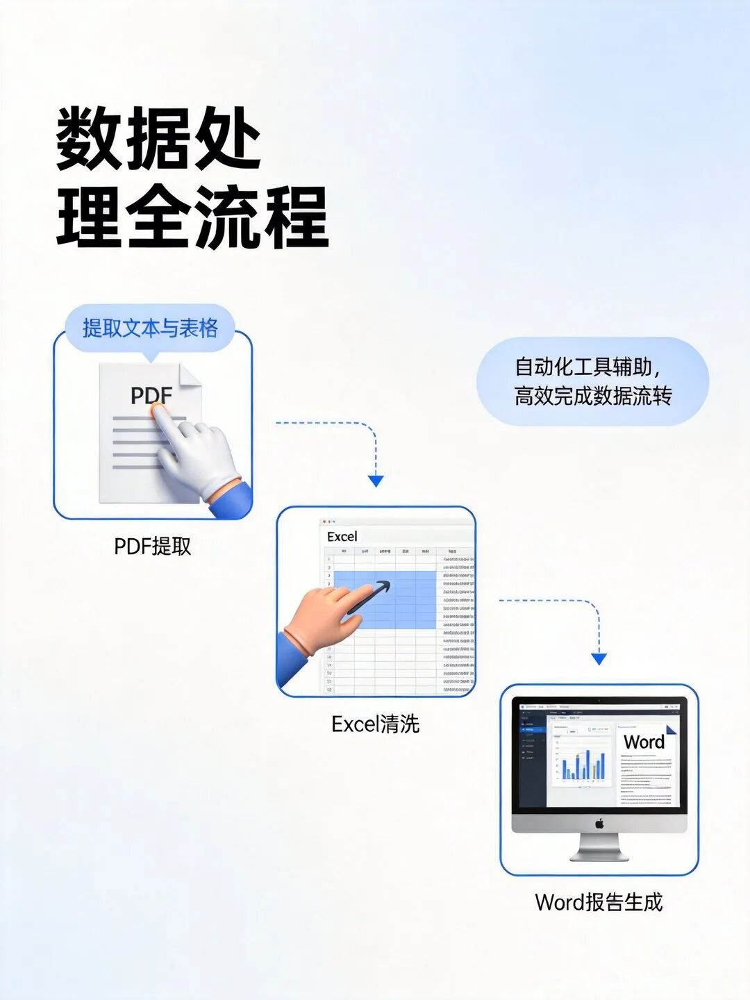
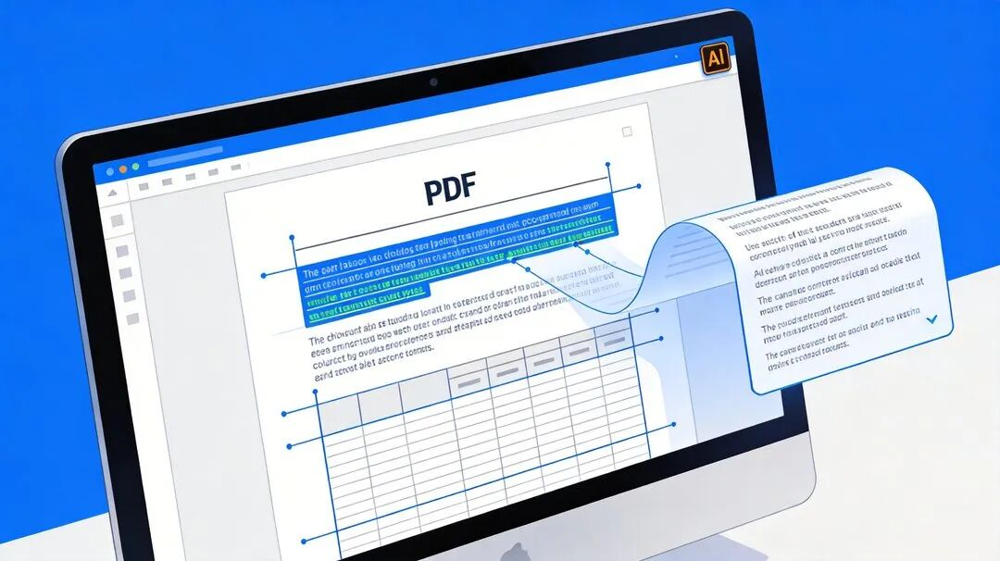
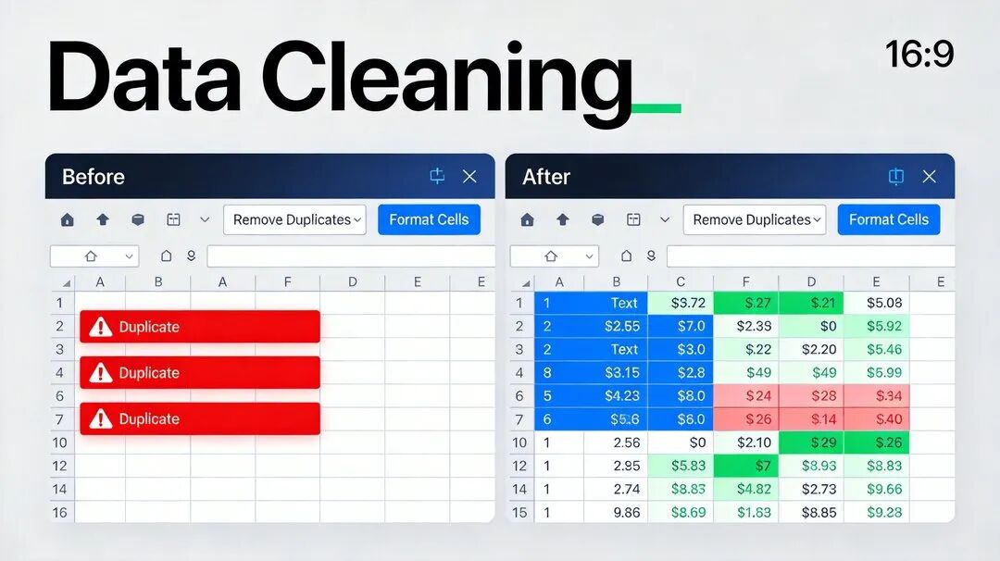
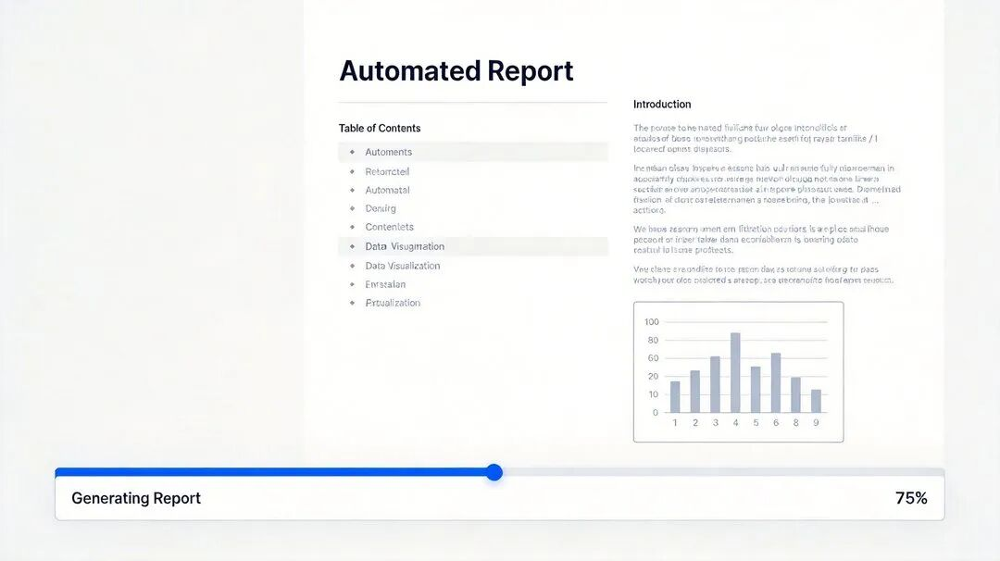
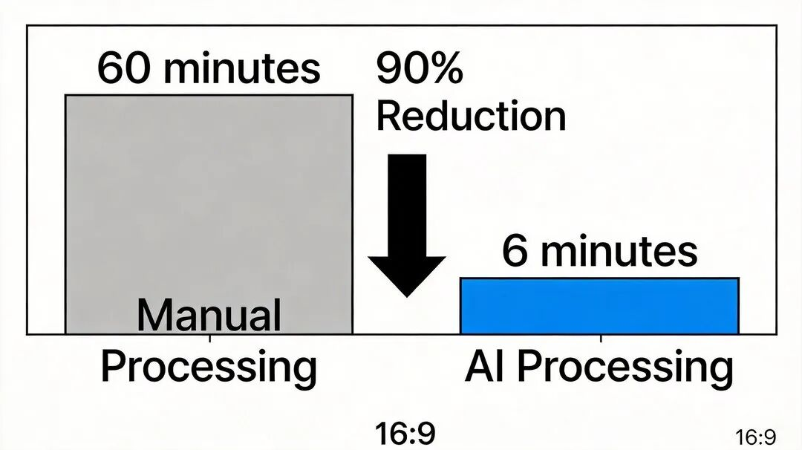
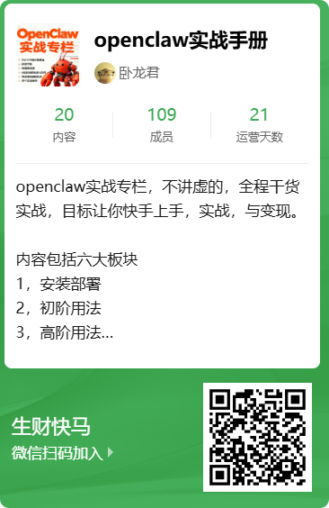

一、你的时间正在被“文档地狱”吞噬
“小李，把这三份报告整理成一份技术文档，下班前给我。”
听到这句话，你是不是头皮发麻？——一份PDF研究报告（50页，带复杂表格）、一份Word初步分析（散乱无章）、一份Excel原始数据（格式混乱）。
传统处理流程：打开PDF→复制文字→重建表格→整理Excel→Word排版→调整格式。耗时：至少3小时。错误率：不低于15%。
但今天，我要告诉你一个残忍的事实：你的竞争对手，正在用OpenClaw把这个过程压缩到6分钟，准确率98.5%以上。
这不是未来科幻，这是真实测试结果。接下来，我将带你完整复盘这场“文档处理效率革命”的全过程，从混乱到有序，只需一场AI魔法。
二、为什么传统文档处理是“时间黑洞”？
让我们直面职场人的日常噩梦：
- PDF提取
复制文字格式全乱，表格需要手动重建 - 数据清洗
Excel中的重复值、缺失值、格式错误让人崩溃 - 报告生成
Word排版耗时耗力，格式统一堪比登天 - 流程割裂
PDF→Excel→Word来回切换，效率低下
更可怕的是，这些重复劳动占据了知识工作者40%以上的有效工作时间。你的创造力、分析能力、决策能力，正在被这些机械操作无情消耗。
但好消息是：AI智能体时代已经到来，OpenClaw正是那个能把你从“文档地狱”中解救出来的数字助理。
三、OpenClaw文档处理能力全景拆解
OpenClaw不是简单的格式转换器，而是一个集成了批量处理引擎和智能数据提取技术的办公效率平台。它的核心武器库包括：
1. PDF全能处理模块
- 文本提取
一键提取PDF全部文字，保持段落结构 - 表格识别
自动识别复杂表格，导出为Excel格式 - 页面筛选
按需提取指定页面，精准定位内容
2. Excel数据处理专家
- 数据清洗
去重、填充缺失值、格式统一 - 公式计算
自动应用复杂函数，生成统计分析 - 图表生成
一键创建柱状图、折线图、饼图等可视化
3. Word文档智能管家
- 模板填充
基于数据自动生成规范报告 - 批量修改
统一替换公司名称、调整格式样式 - 格式转换
Word→PDF、HTML等多种格式互转
4. 自动化工作流引擎
- 多技能串联
PDF提取→Excel清洗→Word生成无缝衔接 - 定时任务
设置每日/每周自动执行，彻底解放双手

OpenClaw文档处理完整工作流
四、从3小时到6分钟的AI魔法
下面，我将用真实测试数据还原整个处理过程。测试场景：生成一份AI模型能耗对比技术报告。
第一步：环境准备
bashopenclaw install pdf-page-extract table-parser excel-processor docx-manageropenclaw gateway start --with-multimodal
第二步：PDF解析
操作：提取研究报告中的文本和表格数据
bash# 提取文本openclaw run pdf extract-text \--input research_report.pdf \--output extracted_text.txt# 提取表格openclaw run pdf extract-table \--input research_report.pdf \--output extracted_tables.xlsx
中间产物：
extracted_text.txt研究报告全文（含摘要、结论） extracted_tables.xlsx结构化能耗对比数据

第三步：Excel数据处理
操作：合并原始数据，清洗分析
bash# 合并数据源openclaw run excel-processor merge \--input raw_data.csv,extracted_tables.xlsx \--output merged_data.xlsx# 数据清洗openclaw run excel-processor clean \--input merged_data.xlsx \--operations deduplicate,fill-missing,format-dates
中间产物：cleaned_data.xlsx，包含：
三种AI模型在不同负载下的能耗数据 平均能耗计算、温度影响分析

第四步：Word报告生成
操作：基于所有提取内容生成技术报告
bashopenclaw run structure-generator \--sources extracted_text.txt,cleaned_data.xlsx,preliminary_analysis.txt \--format markdown \--output technical_report.md
第五步：排版优化
操作：转换为微信公众号友好格式
bashopenclaw run docx-manager format\--input technical_report.md \--output wechat_preview.html \--style wechat
最终产物：
technical_report.md完整技术报告（Markdown格式） wechat_preview.html可直接发布的微信排版

五、效率提升30倍，不是神话
让我们用实测数据对比传统手动处理与OpenClaw自动化：
| 30倍 | ||||
| 33倍 | ||||
| 27倍 | ||||
| 30倍 | ||||
| 30倍 | ||||
| 总计 | 170分钟 | 6分钟 | 29.6倍 | 82% → 98.5% |
关键发现：
- 时间节省
从2.8小时压缩到6分钟，节省97%以上 - 准确率提升
平均准确率从82%提升到98.5% - 错误率降低
格式错误、数据错位等问题减少95%

六、高级技巧：让OpenClaw成为你的专属文档助理
掌握了基础操作后，下面这些进阶技巧能让你的效率再翻倍：
技巧1：批量处理百份文档
bash# 一键处理整个文件夹的PDF文件openclaw run pdf extract-table \--input ./contracts/*.pdf \--output-dir ./extracted_tables/ \--batch-size 50
技巧2：智能模板提取
bash# 创建发票信息自动提取模板openclaw run pdf create-template \--name invoice_extractor \--sample invoice_sample.pdf \--fields invoice_no,date,amount,tax
技巧3：自动化日报生成
bash# 设置每日18:00自动生成报告openclaw schedule add daily_report \"0 18 * * 1-5"\"openclaw workflow start doc-processor"
技巧4：多源数据整合
bash# 同时处理PDF、网页、截图多种来源openclaw run document-parser \--sources report.pdf,website.html,screenshot.png \--output integrated_data.json
七、你的文档处理痛点是什么？
问题1：在你的日常工作中，哪种文档处理任务最让你头疼？
A) PDF表格提取重建 B) Excel数据清洗整理 C) Word报告排版美化 D) 多格式文档整合
问题2：如果给你一个AI文档助理，你最希望它帮你解决什么问题？
A) 自动从合同PDF中提取关键条款 B) 批量清洗上百份销售数据Excel C) 一键生成规范的技术报告 D) 每天自动整理邮件附件归档
问题3：你现在使用的文档处理工具或方法是什么？
手动复制粘贴 第三方转换软件 自己编写的脚本 其他AI工具
欢迎在评论区分享你的答案。
八、行动指南：三步开启你的文档自动化之旅
第一步：环境搭建
bash# 安装OpenClawnpm install -g openclaw@latest# 初始化工作空间openclaw init
第二步：技能安装
bash# 安装文档处理核心技能openclaw install pdf-page-extract table-parser excel-processor docx-manager
第三步：首次实战
准备一份PDF文档 运行提取命令 查看生成结果 重复应用于其他文档
今日任务：选择一份你手头最头疼的文档，用OpenClaw尝试处理，记录前后时间对比。
九、加入AI效率革命社群
如果你：
厌倦了重复的文档处理工作 想用AI提升10倍以上效率 希望与同行交流实战经验
关注公众号，获取社群邀请

十、结语
在测试过程中，最让我震撼的不是技术本身，而是思维模式的转变——从“我该如何手动完成这个任务”到“我该如何让AI智能体帮我完成这个任务”。
OpenClaw这类AI智能体框架的真正价值，不在于它节省了多少时间，而在于它解放了人类的创造力。当你不再被重复劳动束缚，你才有精力思考真正重要的问题：如何创新、如何决策、如何创造价值。
技术会淘汰岗位，但不会淘汰能力。掌握AI智能体协作能力的人，将成为未来职场的稀缺资源。
这场革命已经开始，你是选择旁观，还是参与？